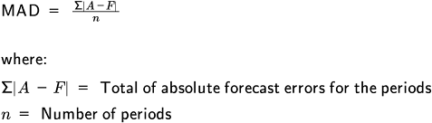

Translating business requirements into supply chain design starts with selecting between two basic types of supply chains: efficiency-focused chains and responsive chains. Either type needs to be resilient in terms of its ability to recover from disruption.
IT requirements for the supply chain can include freeing supply chain managers from tasks that can be automated so they have time to improve processes and relationships. Improvements can relate to supply chain velocity, demand volatility reduction, data management, relationship enhancement, and so on. Since cybersecurity is so vital, the NIST Cybersecurity Framework is discussed as a way to set common IT security requirements.
Organizations often need to balance efficiency (least-cost manufacturing and supply chain) with responsiveness. A third element, resilience, is important for either type of supply chain.
Responsiveness implies being responsive to changing customer requirements. This can take the form of investing in customer service and/or agility. Supply chain agility is measured in SCOR DS® using metrics that basically measure an organization's ability to ramp up or down in production volume without a major impact on cost or organizational disruption.
Since customer focus, agility, and resilience come with a cost, for example, redundant capacity, one cannot generally maximize both efficiency and responsiveness simultaneously. One also cannot ignore either factor entirely. An organization that competes on low cost will maximize efficiency but will still need some amount of responsiveness to mitigate demand risk. An organization that is agile to large fluctuations in demand or to disruptions in the supply chain will still need some efficiency or it will go out of business.
The variables that differentiate efficient and responsive supply chains are inventory volume and demand uncertainty. As you review the following descriptions of the two types of chains, you may recognize and associate certain attributes that are integral to the production of different types of products.
An efficiency-focused supply chain may have these attributes:
There is a short product life cycle.
It may use multiple warehouses for close proximity to customers.
It may maintain extra or redundant capacity in the form of geographically diversified operations or contracts with suppliers.
It may use third-party transportation providers for speedy product delivery.
It may require its manufacturer(s) and suppliers to have a high degree of agility (ramping up or down without cost penalties).
In a response-focused supply chain, the supply chain manager usually develops forecasts based on system flexibility and capacity cushions. (A capacity cushion is extra capacity that is added to a system after capacity for expected demand is calculated. It is also called safety capacity or protective capacity.) Extra capacity may also take the form of redundant manufacturing capabilities at different plants or contractually obligated backup suppliers to safeguard against supply failure risks or to shift capacity in response to demand. From a demand planning perspective, a responsive supply chain that has both high demand variability and sales volumes will probably focus on forecasting parts and components so that it can postpone final assembly until a customer order "pulls" production of the final product.
Being solely focused on either efficiency or responsiveness has proven fatal for some companies.
📖 ASCM Definition — fill rate:
How do you determine the best balance of efficiency and responsiveness for a specific supply chain? In the Harvard Business Review article "Triple-A Supply Chain" by Hau Lee, the author states that intelligent organizations tailor their supply chains to the nature of the product markets for the optimum manufacturing scenario and best distribution capabilities. Supply chain management needs to research and identify how to optimize the supply chain based on the types of products or product groups that are manufactured within the chain. What exactly do the customers value in terms of each purchase they make—low price, convenience, customizable features? This question should have been answered during market research.
The success of the supply chains of Gap Inc. is a testimony that tailoring supply chains can be the right solution. Gap Inc., which owns three major brands—Old Navy, the Gap, and Banana Republic—has three separate but overlapping supply chains on three different continents in order to fit each one to the types of products it produces:
Because it has these three supply chains, Gap Inc. does have higher overhead, lower scale economies for purchasing and production, and higher transportation costs than if it had just one supply chain. Since these brands require different strategies, Gap also uses different supply networks. These networks can provide backup for each other if any experiences a disruption.
Supply chain managers need to determine which type of supply chain is most appropriate for a particular product. It may require some data analysis to do this accurately. Exhibit 2-2 shows how supply chain types can be fitted to products based on volume and demand uncertainty.

Organizations that focus primarily on efficiency may select a make-to-stock manufacturing strategy (goods are produced and held in warehouse/retail locations before customer orders are placed). Organizations that focus on responsiveness may use a make-to-order manufacturing strategy (goods are manufactured only after customer orders are placed) or an assemble-to-order strategy (product components or modules are produced based on forecasts and are assembled when customer orders are placed).
In addition to efficiency and responsiveness, modern supply chains also need to be proactive in regard to disruption risks. Making either an efficient or a responsive supply chain agile enough to respond to risk is called making it resilient.
Once you identify where a product falls in regard to the variables of volume and demand uncertainty, you can research and identify potential changes that will enhance the fit of the supply chain to the product. But some researchers don't think that in itself will be sufficient. Author Lee states that although supply chain efficiency is necessary, it isn't sufficient proof that a company will outperform its competitors. He argues that in order to develop or maintain a competitive edge, supply chains also need to become agile, adaptable, and aligned with other entities in the supply chain. In other words, they need to become resilient. Supply chain resilience is defined by the ASCM Supply Chain Dictionary as "the ability of a supply chain to anticipate, create plans to avoid or mitigate, and/or to recover from disruptions to supply chain functionality."
Authors Sheffi and Rice echo a similar message in their article "A Supply Chain View of the Resilient Enterprise." They point out that a company's resilience is determined by its competitive position and its supply chain's ability to be responsive to changes or disruptions. Companies that respond successfully to unpredicted disruption will reinforce their competitive advantage and gain market share. They can increase their resilience by building in redundancy or flexibility. Redundancy can also be created by establishing safety stock, using multiple suppliers (even when more expensive), and intentionally setting low capacity utilization rates. To increase an organization's flexibility, mechanisms or indicators need to be put in place that can sense threats and react quickly and accordingly. Efficiency-focused supply chains may have to avoid some of the more expensive resilience initiatives, but they cannot omit all of them.
In summary, no matter what type the supply chain is, if the appropriate metrics and key performance indicators are being used and the supply chain fits with the market and the product requirements for the company, that supply chain has the potential to create a sustainable competitive advantage.
Supply Chain IT Requirements
📖 ASCM Definition — information technology (IT):
Networking technology also plays a central role in enabling the transmission of information throughout organizations and among supply chain partners.
The information system in a supply chain is not only a collection of data. According to the ASCM Supply Chain Dictionary, an information system (IS) is the
interrelated computer hardware and software along with people and processes designed for the collection, processing, and dissemination of information for planning, decision making, and control.
This definition's focus on people and processes is the key to getting the most out of any information system. Technology should automate the flow of information and help network people together so they can share their knowledge efficiently and effectively. By using an electronic document, "the electronic representation of a document that can be printed" (ASCM Supply Chain Dictionary), people and automated systems can easily share data and information of every nature. Technology should help automate, control, and standardize processes so that people can focus more on the "why" and the social elements of transactions or on the exceptions to normal transactions. Finally, information systems not only help turn data into information by putting it in context; they also help share and create knowledge by finding and highlighting new associations between data. These capabilities empower people and processes to continually improve. In other words, the key is turning data into information and then turning that information into action.
Organizations can employ IT to aid supply chain management in many ways, including the following:
To increase supply chain velocity, agility, and scalability. By enabling the efficient transfer of secure information among independent supply chain partners, IT supports the formation of virtual chains. Firms specializing in complementary core competencies can network together temporarily to develop new products and exploit fast-changing opportunities.
To provide cost-effective global visibility of data. Rapid, inexpensive transmission of massive amounts of data through the internet enhances global supply chain visibility. The resulting improvement in sourcing and selling decisions is now a standard that must be met by other companies.
To avoid the bullwhip effect. IT can be used to gather, integrate, and report logistical data to show actual supply chain activity and avoid the bullwhip effect that occurs when partners forecast with incomplete data.
To create lean, cost-effective supply chains by replacing inventory flows with information flows and moving from push to pull. Rapid data streams replace push systems with pull systems, in which real-time data sent from the point of sale allow planners to respond rapidly to actual shifts in demand.
To gather, store, and analyze knowledge and share it among supply chain partners. Efficient networking and integrative technologies give each partner strategic and tactical capabilities that enhance everything from strategic analysis to logistics.
To facilitate strategic, tactical, and operational planning and coordination. By giving all partners the same information, supply chain partners are empowered to improve the overall profitability of the supply chain rather than solely focusing on their own profits.
To drive accuracy of data and provide straight-through processing. Data can be entered once, stored in one place, and used in multiple transactions without reentry errors.
To facilitate new relationships. IT has removed many of the barriers (sometimes called "friction") that locked organizations into less-than-optimal relationships. Thus it has enabled easier formation of new supply chain partner relationships to exploit emerging global opportunities.
To deepen trust in existing relationships. IT can help create greater trust among supply chain partners using real-time information sharing.